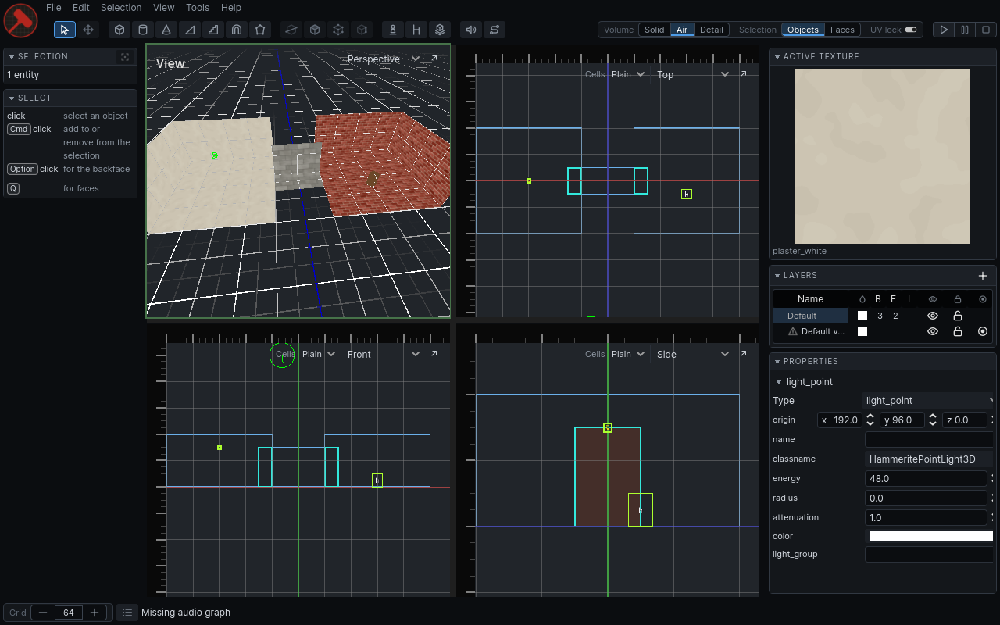
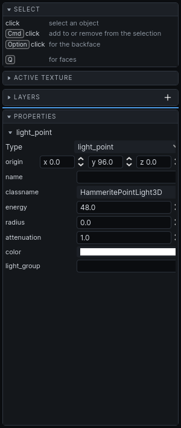
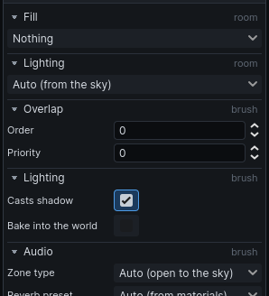
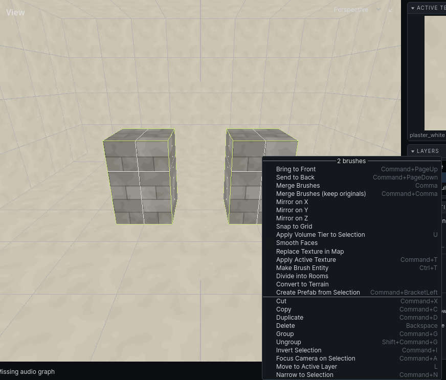

The interface
From top to bottom: menubar, toolbar, the views between two side panels, and the status bar.

Views
Four views: 3D (perspective) top left, and three flat views: top, front and side. Click a view to give it the keyboard; it gets an outline. Drag the lines between views to resize them.
Mmaximises the view under focus, and restores the four-way split. The↗button in a view's top right corner does the same for that view.- The name in a view's top right corner says what it shows. Choose another to swap: the view you choose moves to this corner, and this one takes its place. The editor remembers the arrangement.
- The 2D views fill in the rooms cut at one depth. Drag from a ruler with the right mouse button to move the cut of the view across from it. See Camera.
- Each 2D view has rulers along its top and left edge. Click or drag in a ruler to move a working plane: the plane new brushes are drawn on in the other flat views. Or point at a face and press
.to put the working plane through it: in a 2D view, that view's plane; in the 3D view, the plane of whichever view the face faces. - The View dropdown in the 3D view's top left corner holds what that view draws: the visualisation mode, grid, wireframes and overlays. See Keyboard reference.
Menubar
| Menu | Holds |
|---|---|
| File | open, save, save prefab sets, migrate 1.x resources, close the editor |
| Edit | undo, copy, paste, duplicate, delete, group, merge, UV lock |
| Selection | what to do with the selection: mirror, snap, tier, layer, texture, prefabs, narrowing, simulation |
| View | warning markers, grid size, UI size |
| Tools | every tool, and the texture and decal browsers |
Addons can add their own menus after these. Every item shows its key. See Keyboard reference for the full list.
Toolbar
Left to right:
| Group | Buttons |
|---|---|
| Pointing | Select, Move |
| Drawing | Cube, Cylinder, Cone, Ramp, Stair, Arch, Polygon |
| Cutting and shaping | Clip, Face, Vertex, Edge |
| Placing | Entity, Prop, Prefab |
| Addon tools | Audio Portals, Navigation, when those addons are installed |
| Simulation | Play, Pause, Stop |
The terrain, decal, lightmap and sky tools have no button. Use the Tools menu or their keys.
At the right end, in a darker strip of its own, is what the editor is set to do rather than a tool to start:
| Setting | Choices |
|---|---|
| Volume | Solid, Air or Detail: the tier new brushes are made in |
| Selection | Objects or Faces: what a click picks |
| UV lock | on or off: whether textures travel with moved geometry |
The Cells dropdown in each 2D view's top right corner colours the rooms in the 2D views by what a system knows about them. Interior / exterior is built in; addons add their own.
Play runs the selected entities, or every entity when nothing is selected. While it runs, the frame round the views is tinted red and Play is lit red; while it is paused, the tint is amber and Pause is lit. Stop puts everything back.
Side panels
Each side panel is a stack of boxes, each under a dark header with its name. On a small screen, put them where you have room:
- Click a header to fold its box down to the header alone. Click it again to open it.
- Drag a header to move its box. A blue line shows where it will land, in either side panel.
- Right-click a header to fold it, move it up or down, or send it to the other side panel. Reset Panel Layout puts every box back where it started.

Drag the edge of a side panel to resize it. When the boxes are taller than the window, the panel scrolls. The editor remembers the widths, where each box is, and which are folded.
Where the boxes start:
Left panel
- Selection: what is selected, and the narrowing controls. See Selecting.
- The entity, prefab or prop browser, while its tool is active.
- Tool help: the active tool's name, what it expects next, and what each click and key does. Read this when a tool seems stuck.
Right panel, top to bottom:
- Active texture swatch. Click it to open the texture browser.
- Layers. See Layers.
- Problems, only when there are any. See Problems.
- Properties, the inspector, when something with properties is selected. See below.
- Tool options, framed in blue: the active tool's panel, including the audio and navigation tools' panels.
A box with nothing to show, such as Problems when there are none, is hidden along with its header. A tool also hides the boxes it has no use for while it is active, and they come back when you leave it: the lightmap tool, for one, hides Properties and the active texture, so its own options have the room.
Inspector
Shows the properties of what is selected. Change a value to change it on every selected object. Each change is one undo step.
The inspector is made of sections. Click a section's heading to fold it away; the editor remembers, per section and, for an entity's own sections, per entity type, so folding a light's properties leaves a door's open. The grey text at the right of a heading says what the section applies to, such as room, 3 brushes or 2 entities. Nothing in the inspector scrolls on its own: a long section makes the panel taller, and the panel scrolls, fading at the edge that has more past it.
- Selection, when several things are selected: a row for each kind, such as light_point ×2 or room ×3. Hover a row to light all of that kind in the views, and click it to keep only that kind selected. Show all lists every one of them; hover one to light it up, click it to select only that one.
- Entities: a section named for the type, with a Type picker and then the type's properties. A value the selection disagrees on is shown as mixed; setting it sets it on all of them. Hover a property's name for what it does.
- Running entities: a Running section with the live values, and a button for each action the entity offers. Actions are not undoable; Stop puts the entity back.
- Air brushes: Fill (what fills the room), Lighting for the room, and any sections addons declare, such as acoustics. A section appears only when it applies to every selected brush. See Fills.

Status bar
Left to right:
- Grid size, with − and + either side of it.
- The log button, which opens the message log above the status bar and closes it again, and the latest message beside it. The message flashes red when it is an error. View → Message Log opens and closes the log too.
- While the map is saving, a spinner and how far the save has got. Saving runs alongside the editor, but nothing can be edited until it is done. Once the map file is written, the first save of a session may compile the map's other variants for their worldrep caches, which on a large level takes a while; Cancel skips that, and they compile when the map is next loaded.
What is selected is shown in the Selection panel.
Right-click menu
With the Select tool active, right-click in a view without dragging for what can be done with what is under the cursor.
- Right-clicking something outside the selection selects it first.
- Right-clicking inside the selection keeps it, so the menu acts on all of it.
- Only what applies is listed. Entities also list their own actions and the Simulate / Pause / Stop and Reset controls for just that entity.

Command launcher
Press / (or Cmd Shift P) for a field that runs any command by name, in any tool. Type a few letters and press Enter to run the top match:
- Select two brushes.
- Press
/and typeme. - Merge Brushes is at the top. Press
Enter.
- Letters match the start of any word, the initials (
mb), or a word the command is known by (join). Every word you type has to match. ↑↓choose another row.EscorCmdShiftPcloses it.- Each row shows the command's menu and its key, so you can learn the key.
- Commands that cannot run with what is selected are listed last, dimmed.
Enteron one does nothing. - What the selection's entities can be asked to do is listed too, as in the right-click menu.
- Commands you ran lately come first among equal matches.
Every command an addon or your game adds is in it as well.
UI size
View → Bigger UI (Cmd =) and Smaller UI (Cmd -) scale the editor's own interface. The editor remembers it, with panel widths and view toggles, between sessions.